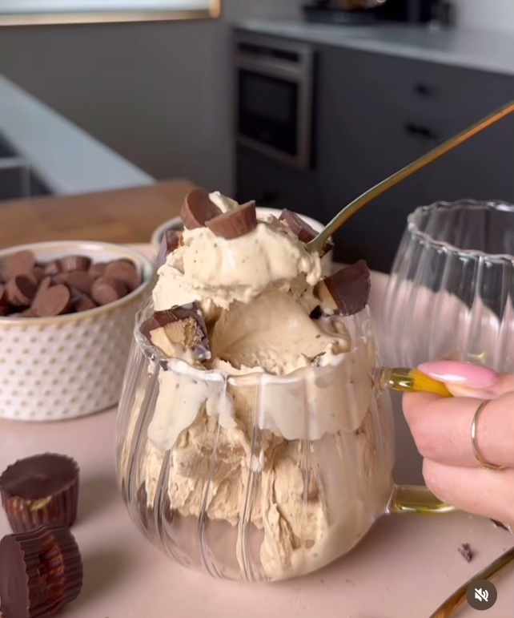

Protean Peanut Butter Cup Creami

Yummy Peanut Butter Cup Ice Cream
Dairy free protein peanutbutter cup creami ice cream
Ingredients
- 1 can lite coconut milk
- 1 scoop vanilla protein powder
- 1/4 cup powdered peanut butter
- 2 tbsp. maple syrup
- 1/8 tsp. kosher sea salt
- 1/2 cup dair-free chocolate peanut butter cups, halved
- Ninja Creami
Steps
- Add all of the ingredients except for the peanut butter cups to a blender and blend
- Pour the mixture into the Ninja Creami contianer
- Store in the freezer overnight
- Remove the frozen Creami container from the freezer and place it in the Creami machine and hit the "ice cream" setting
- Remove the Creami container from the machine and add 1 tbsp of nut milk
- Place back in the machine with the lid on and select "respin"
- Perform this respin process 2x until the mixture is creamy and smooth
- Stir a 1/3 cup of the peanut butter cups into the ice cream
- Place the Creami back in the dock and select "mix-ins"
- Once it has spun a final time, remove and serve with more peanut butter cups
- Enjoy!